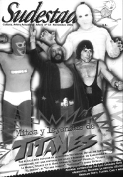

Buscar
Mitos y leyendas de "Titanes en el ring"
Fue el ciclo más popular de la historia televisiva. Marcó a fuego la infancia de varias generaciones. Pero detrás de tantos inolvidables luchadores, hay una historia con luces y sombras. De Karadagián a La Momia, la cara oculta de Titanes en el Ring. Opinan el "Ancho" Peucelle, "Ulises el Griego", el "Gitano Ivanoff", "Sullivan" y Jorge Bocacci.
Edición N° 54
Noviembre 2006
Revista bimensual
Comprar edición impresaSumario
- Mitos y leyendas de "Titanes en el ring"
- Recuerdos compartidos
- Revista ¡Esto!: Memoria del crimen
- Haroldo Conti: Memoria y celebración
- Sangre nueva
- Entrevista con Luis Eduardo Aute: "Dios seguramente es puro sexo"
Compartir Articulo
Cuenta la leyenda, y uno ya no sabe cuánto hay de memoria propia y cuánto de imaginario colectivo, que el campeón del mundo se enfrentó, en una noche inolvidable, al desafío de su vida. Los escépticos que nunca faltan, se empeñaban en decir que enfrente no había nadie. Mentira. Enfrente un enigmático adversario: el Hombre Invisible, nada menos. Aquí, otra vez, el recuerdo se transforma en esa onírica arcilla en perpetua construcción. Épico combate aquél que enfrentó al armenio contra una violenta sombra. Martín Karadagián debatiéndose sobre el ring contra un inasible rival, soportando tomas, acusando golpes mortales, cayendo y zafando con agilidad por entre las cuerdas. Miles de pibes contenían la respiración. Mientras tanto, el inolvidable relator Rodolfo Di Sarli, privilegiado dueño de unos anteojos especiales, era el único capaz de observar desde el ring side el fragor de la contienda.
Dicen las voces de la memoria que cierta mañana, el puerto de Buenos Aires se vio invadido por una turba de ansiosos pibes. Los estibadores de la dársena C, repleta con 8 mil almas infantiles, aguardaban que atracara un buque venido desde El Cairo con su carga misteriosa: un sarcófago cuyo contenido era el motivo de semejante expectación. En aquel milenario cajón, llegaba La Momia a Buenos Aires. Y la gente deliraba.
¿Cuánto de mito y cuánto de verdad respira en estos recuerdos? ¿Quién se acuerda hoy del humo y los chispazos que lanzaba el Androide cuando la sordomuda Momia le provocó un cortocircuito en pleno ring, ante la desesperada mirada del profesor Demetrius? ¿Qué memorioso puede dar fe que padeció, alguna vez, el martirio de los "dedos magnéticos" del Indio Comanche? ¿Quién se atreve a negar hoy, tanto tiempo después, que todos fuimos, alguna vez, el Caballero Rojo, el Hombre Vegetal o el Ancho Peucelle, en nuestras peleas en el patio del colegio? ¿Dónde andan hoy el Superpibe y Fantasman? ¿En qué oscuro rincón se ocultan el Doctor Cerebrus y Diábolo?
Rebuscar en el baúl todo aquello que nos dejó Titanes en ring nos traslada, indefectiblemente, a tiempos pasados, al refugio de nuestra infancia. Es que Titanes… habla de aquello que fuimos alguna vez, y nos inyecta el virus feroz de la nostalgia. Con Titanes… nos sumergimos, por fin, en el océano de un tiempo marcado por la leche con Zucoa, las figuritas redondas, las japonesas de seis piques, los maestros del yo-yo Bronco y el Naranjú. Hoy, Titanes… forma parte de aquel universo, y sus puertas abiertas nos permiten volver a ser, al menos por el tiempo que demoró la investigación para esta nota, lo que fuimos en años pasados. Teníamos que volver, volver para charlar con los luchadores, para escuchar sus historias, las luces y sombras de aquel ciclo antológico que marcó a varias generaciones de pibes y que hoy sigue ocupando un lugar privilegiado en la memoria popular. Teníamos que volver, aunque más no sea para confirmar que el tiempo pasa para todos. Incluso para el Hombre Invisible.
El armenio terrible
"¿Y usted quién es?", estalló el vozarrón de Karol Nowina, en la penumbra del gimnasio. Nunca más petiso que en aquel momento, un tímido joven llamado Martín Karadagián se había atrevido a molestar al conde polaco en pleno entrenamiento con la intención de pedirle un lugar en su troupe. Nowina recorrió con la vista la breve humanidad del visitante con gesto burlón, imaginando los destrozos que podían llegar a provocarle los golpes "de ablande" de sus luchadores al advenedizo catcher. El conde estuvo a punto de mostrarle la puerta, justo cuando el armenio cometió el error de jactarse de un título mundial como luchador de greco-romana. Tanta soberbia irritó al pionero del cachascán en Argentina: ese armenio iba a pagar con sangre su osadía. Karadagián subió al ring esa tarde, y las tardes que siguieron, para comerse verdaderas palizas. El "ablandamiento" del recién llegado era tarea de rutina para los catchers de Nowina, que lo utilizaban para practicar nuevas tomas y caídas. Pero era duro el armenio, sabía mejor que nadie lo que era pasarla mal, eso de aguantarse calladito los golpes…
Había nacido en un conventillo de San Telmo, hijo de la española Paulina Fernández y del armenio Hamparzun Karadayiján (después mutado al Karadagián que utilizó su hijo), y no tuvo lo que se dice una infancia fácil. "Mi padre fue una bestia, un matarife rico y amarrete que se cansó de pegarnos a mí y a mi hermana", recordó después Martín, que intentaba eludir el maltrato paterno rebuscándosela por las calles de Buenos Aires. "Yo fui empresario lustrabotas, compraba los cajones y se los daba a otros pibes para que trabajen para mí", comentaba años más tarde, como orgulloso de su capacidad como negociante desde sus primeros empleos. Con el tiempo y a fuerza también de ayudar en la carnicería del viejo cargando medias reses cada mañana, el físico de Martín se fue transformando en su mejor herramienta. Así fue como uno de los puesteros del mercado, sorprendido por su contextura física, lo invitó a la Asociación Cristiana de Jóvenes a practicar lucha greco-romana. Allí comenzó su historia como luchador, un periplo que lo llevaría a integrar, después de superar el exigente examen inicial, la troupe de catchers que peleaban en el Luna Park por los años cuarenta, bajo las órdenes de Nowina. Muy de a poco, incansable y cada vez más afirmado, se fue metiendo en el selecto y recio universo del catch. Recién en 1947 consiguió que los demás prestaran atención a su complicado apellido cuando protagonizó una épica pelea contra Iván Zelezniak, el Hombre Montaña ucraniano. Un par de años más tarde, aprovechó el hueco que dejó la partida de Zelezniak (cinco veces campeón, de 1947 a 1951, las cinco veces secundado por Karadagián en el podio) de la organización de los torneos en el Luna y se asoció con Nowina. Después de haber pagado durante años derecho de piso, el armenio terrible ya era uno de los atractivos más convocantes de las veladas de catch: "Irascible catcher que en todas las reuniones apela a recursos prohibidos que no pocas veces provocan su descalificación por el juez", definió entonces el diario Noticias argentinas.
El campeonato de 1952 marcó el arribo de Karadagián a la cumbre del catch, con el primero de seis títulos consecutivos como campeón; pero también significó el inicio de un imperio que abandonaría, en poco tiempo, el reducido escenario del Luna Park para transformar ese deporte en un fenómeno popular sin precedentes...
(La nota completa en la edición gráfica)
Comentarios
Hugo Montero, Ignacio Portela
Articulos más vistos


LIBRERÍA SUDESTADA

Colección infantil

Distribuidora de Libros

Suscripción

Sudestada en URUGUAY

Otros articulos de esta edición
 Dossier
Dossier
Revista ¡Esto!: Memoria del crimen
A mediados de la década del ‘80 apareció una revista que rompió con todas las fórmulas del género del periodismo ...
 Entre líneas
Entre líneas
Haroldo Conti: Memoria y celebración
Narrador forastero, periodista amigo de los caminos de tierra, artista comprometido con su tiempo; Haroldo Conti sigue hoy marcando con ...
 Entre líneas
Entre líneas
Entrevista con Luis Eduardo Aute: "Dios seguramente es puro sexo"
Cantautor, poeta, cineasta, artista plástico y quién sabe qué más; el trabajo de Luis Eduardo Aute durante décadas se asemeja ...
 Editorial
Editorial
Recuerdos compartidos
Curioso fenómeno el que surge cuando un número importante de gente se encuentra y comenta, entre divertidas anécdotas y viejas ...
 Teatro
Teatro
Sangre nueva
Lejos de las grandes marquesinas que muestran muchachas ligeras de ropa y popes del humor del chiste fácil, hay una ...